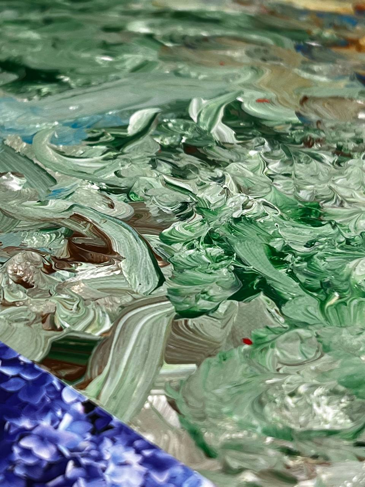

Gallery
Good day,
welcome to my virtual gallery where I showcase my works. I hope you'll spend a pleasant moment here and find something for yourself.
Nic nie może się zmarnować
24/11/2024
30 x 30 cm
Acrylic on canvas, printed and glued

Nothing can be wasted
a car
12/05/2025
50 x 40 cm
Acrylic on canvas
Shai-Hulud
30/07/2024
50 x 40 cm
Acrylic on canvas
The desert worms (sandworms) live on the planet Arrakis, called Shai-Hulud or Makers by the Fremen. The worms are creatures that resemble earthly annelids in appearance, but much larger - their length can reach several hundred meters, with confirmed observations of worms even over 400 meters long and 40 meters in diameter.
Fields of Discrete Color Changes II
30/03/2024
30 x 30 cm
Acrylic on canvas
A return to the theme of fields of discrete color changes. This time on canvas with acrylic.
Venice
19/03/2024
50 x 40 cm
Acrylic on canvas, pencil and acrylic on paper
The starting point was inspiration from a work discovered while walking through the narrow streets of Venice.
Sometimes it's difficult to escape certain thoughts and states of mind.
Fragments of the preliminary sketch are part of the painting and remind of the first idea, the beginning of the journey.
Untitled
14/03/2024
40 x 50 cm
Acrylic on canvas
A figure reaching behind itself for all the mess of the world. Or maybe it's returning? Or perhaps standing on it? Why?
Cosmos
2023
30 x 40 cm
Acrylic on canvas
Another painting with a cosmic theme. A star, perhaps imperfect and painted quickly, but that's how it's meant to be.
Pojnarówka
04/2023
30 x 30 cm
Acrylic on canvas
A pond, forsythias, sky, silence, peace, summer. Inspired by an exhibition in a certain café where a group of friends met. The meeting was the beginning of something new. It's not yet known where it will lead.
Over time, the forsythias strongly reminded me of childhood, playing with sticks from their branches, a complete lack of worries, and peace.
View from the Window
2022
Acrylic on canvas
Mimas
24/12/2022
25 x 30 cm
Acrylic on canvas
Mimas is a moon of Saturn, one of the smallest known celestial bodies that has a spherical shape. No, it wasn't the inspiration for the Death Star. It was photographed in sufficient resolution only a few years after the film was produced.
On one hand, a boring, cold, and dead piece of rock. On the other, bombarded for billions of years by millions of smaller objects. The striking remnant of one such catastrophe is the characteristic crater Herschel. Its formation is dated to 4.1 billion years ago.
This one piece of rock traversing cosmic space has a longer history than our entire civilization and all our achievements and failures. It has outlived all our discoveries, wars, plagues, inventions, artists, writers, engineers, kings. At the same time, it remains totally bland and indifferent to everything that exists, even to itself.
Untitled
09/12/2022
40 x 50 cm
Acrylic on canvas
This painting is not my work, but it's important and had to appear here as a guest.
Untitled
09/12/2022
40 x 50 cm
Acrylic on canvas
A painting created with wine and ham during a rather pleasant moment in my life. The stars were painted using a toothpick after cheese and ham. It got slightly smudged during transport.
Fields of Discrete Color Changes
2021
Computer graphics
Works inspired by the art of Jan Pamuła (1944 - 2022), who specialized in graphics (including computer graphics) after a chance visit to his exhibition in Krakow.
The fields were generated recursively by my own script, which randomly divides the image into increasingly smaller fragments and selects a color for them from a given palette.
Each specimen produced by the program is practically completely different from all the others. The number of all images that we can obtain in this way is absurdly large, many times greater than everything countable in our observable universe. In such a simple form and such simple assumptions, practically infinitely many possibilities are trapped. As humans, we can see only a fraction, and in reality, 0% of all fields.
One could say that we are unable to analyze and comprehend everything that all the images in this series have to tell. On the other hand, the "artist" here is an algorithm and a mindlessly executing machine. So perhaps this means that all specimens in the series are completely barren, soulless, and constitute merely an empty sequence of zeros and ones. Maybe it's an infinitely primitive competition for machine learning models that generate images of reality on demand in today's world.
Thank you for visiting my gallery. I wish you a pleasant day or a pleasant evening 


{kind=link}
{kind=link}
{kind=link}
{kind=link}
{kind=link}
{kind=link}
{kind=link}